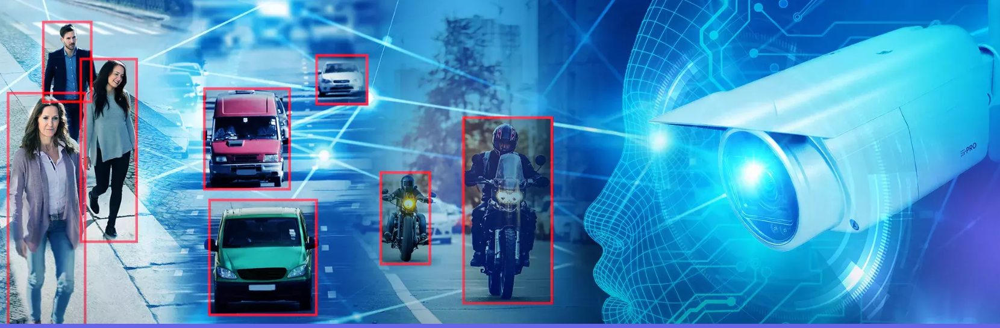
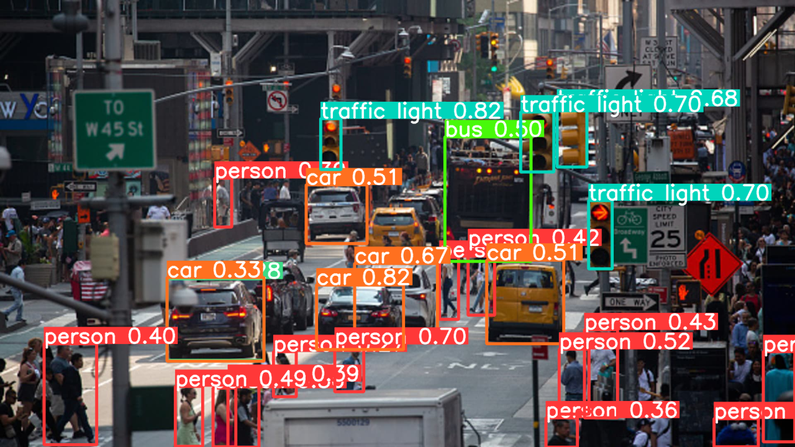
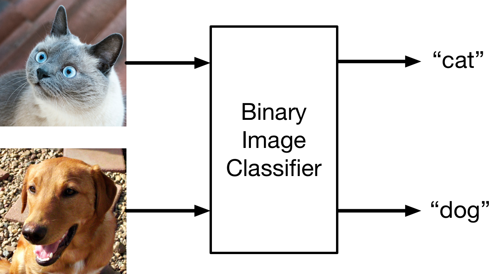
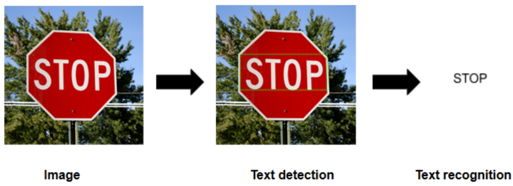
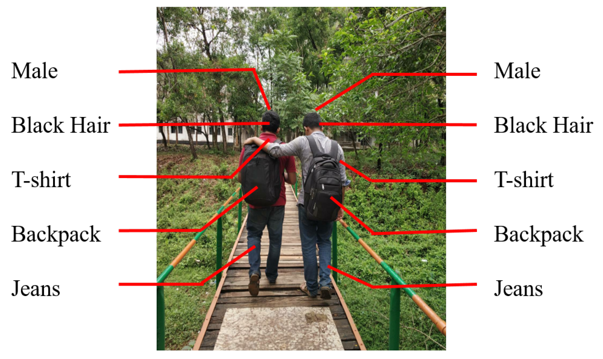
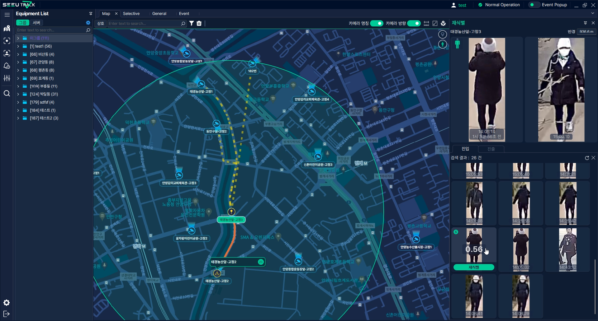
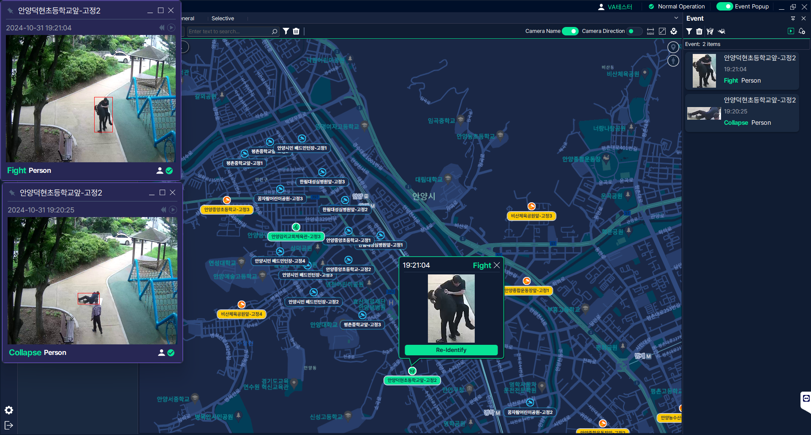
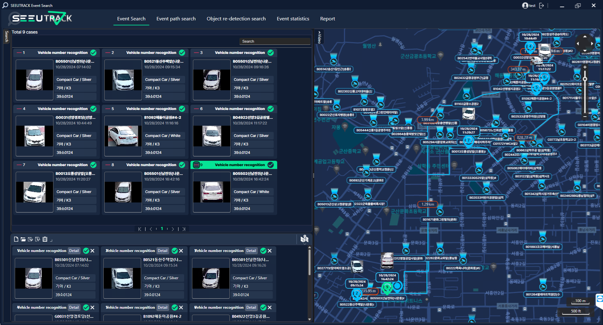
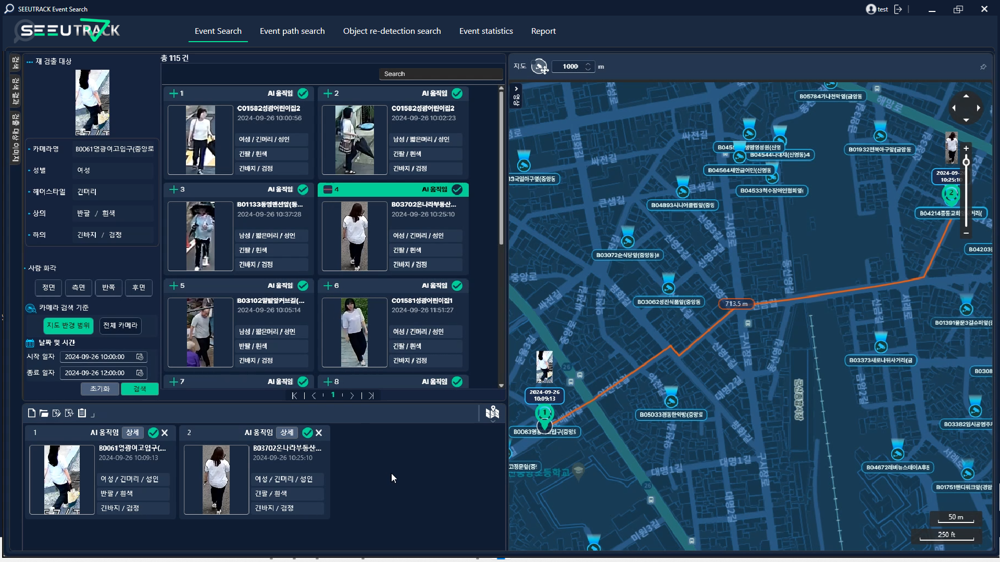

SeeU Track (November 2024 ~ May 2025)
Client: Vietnam Police Department, TriNam
Affiliation: SECERN AI (AI Team 2)
In this project, we developed AI models for an AI CCTV system called
SeeU Track. The system mainly focuses on re-identification tasks for vehicles and persons.
For vehicle re-identification, we employed an object detection model for detecting vehicles and their license plates,
a classification model to recognize the vehicle's brand, model, and color, and text detection and text
recognition models (OCR) to read the license plate. For person re-identification, we applied
an object detection model to detect persons and a person attribute recognition model to
recognize the person's attributes in terms of gender, age, type and color of clothing, etc.
We accomplished 87.52% accuracy for the integrated system.
Tech Stack: PyTorch, OpenVINO, ONNX, Docker, Slurm
My Responsibilities:
- Built the data preprocessing pipeline and labeling system
- Researched and developed vehicle / person detection and attribute recognition models
- Model lightweighting (OpenVINO / ONNX) and system integration
Challenge & Solution: Local environment and vehicle types differed from
the training data, degrading generalization. We directly collected local data and operated a
labeling workforce for domain adaptation. Person attribute labels were also insufficient, so we
used VLM-based automatic labeling with a review process to secure high-quality data.
Outcome: Vietnam Police Department PoC system successfully built and delivered.

1. Person, Vehicle, and License-Plate Detection
We utilized an object detection model to accurately detect persons, vehicles, and license plates.
To select the most suitable model for the desired environment,
we searched and tested various open source models, and decided to use the YOLOv11 model.
We achieved 96.8% (+10%) for detecting vehicles and
97.2% (+7%) for detecting persons, and
98.41% for detecting license plates.

2. Vehicle Recognition with a Classification Model
We used an object classification model to extract the MMC (make, model, color) information
of vehicles. For this task, many open source models were tested, and the YOLOv11 model
was chosen since it achieved higher accuracy than others.
We achieved 80.1% accuracy in the test dataset.

3. License Plate Recognition
An OCR model was used for this task. The OCR model consists of text detection and recognition.
We tested and evaluated various models, and DBNet for text detection and SVTR for text recognition were chosen.
We achieved 97.84% (+13%) for the accuracy.

4. Person Attribute Recognition
Person Attribute Recognition is the task of extracting information about a person,
including gender, age, type and color of clothing, accessories, etc. To develop
the model, we experimented with different architectures for feature extraction such as
ResNet, Vision Transformers (e.g., Swin Transformer), and others. After extensive testing, we
decided to employ a Vision Language Model (VLM) for feature extraction and transformer layers
for the classification task.
We achieved 82.34% (+12%) for the accuracy in the test dataset.



